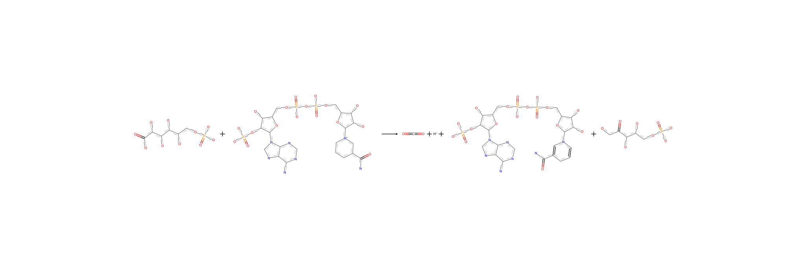

ACHMC (for AEFMs)
This section shows how to use the functions in MarkovWeightedEFMs.jl to enumerate and assign AEFMs weights to the following multispecies reaction network.

Inputs
S = [#
1 0 -1 0 0 0 0 0 0 0 0 0 0 0 0 0 0 0
0 1 -1 0 0 0 0 0 0 0 0 0 0 0 0 0 0 0
0 0 1 0 0 0 0 0 -1 0 0 0 0 0 0 0 -1 0
0 0 1 -1 0 0 0 0 0 0 0 0 0 0 0 0 1 0
0 0 1 0 -1 0 0 0 0 0 0 0 0 0 0 0 0 0
0 0 1 0 0 -1 0 0 0 0 0 0 0 0 0 0 0 0
0 0 0 0 0 1 -1 0 0 0 0 0 0 0 0 0 0 0
0 0 0 0 0 0 0 1 -1 0 0 0 0 0 0 0 0 0
0 0 0 0 0 0 0 0 1 0 0 -1 0 0 0 0 0 0
0 0 0 0 0 0 0 0 0 1 0 -1 0 0 0 0 0 0
0 0 0 0 0 0 0 0 0 0 1 -1 0 0 0 0 0 0
0 0 0 0 0 0 0 0 0 0 0 1 -1 0 0 0 0 0
0 0 0 0 0 0 0 0 0 0 0 1 0 -1 0 0 0 0
0 0 0 0 0 0 0 0 0 0 0 1 0 0 -1 0 0 0
0 0 0 0 0 0 0 0 0 0 0 0 0 0 0 1 -1 0
0 0 0 0 0 0 0 0 0 0 0 0 0 0 0 0 1 -1
]
v = [10, 10, 10, 13, 10, 10, 10, 7, 7, 7, 7, 7, 7, 7, 7, 3, 3, 3]
mets = [#
"6-phospho-D-gluconate", # 6PG
"NADP+",
"CO2",
"H+",
"NADPH",
"ribulose-5-phosphate", # R5P
"ribose-5-phosphate", # 5RP
"AIR",
"5-phosphoribosyl-4-carboxy-5-aminoimidazole", # CAIR
"aspartate",
"ATP",
"ADP",
"O4P3-",
"SAICAR",
"H2O",
"HCO3-"
]
rxns = [#
"source 6PG",
"source NADP+",
"6PG dehydrogenase",
"sink H+",
"sink NADPH",
"ribose-5-phosphate isomerase",
"sink ribose-5-phosphate",
"source AIR",
"sink CO2",
"source aspartate",
"source ATP",
"SAICAR synthetase",
"sink ADP",
"sink O4P3-",
"sink SAICAR",
"source H2O",
"HCO3- formation",
"sink HCO3-"
]
smiles = [#
"O=C(O)C(O)C(O)C(O)C(O)COP(=O)(O)O"
"NC(=O)c1ccc[n+]([C@]2O[C@](COP(=O)(O)OP(=O)(O)OC[C@]3O[C@](n4cnc5c(N)ncnc54)[C@@](OP(=O)(O)O)[C@@]3O)[C@@](O)[C@@]2O)c1"
"O=C=O"
"[H+]"
"NC(=O)C1=CN([C@]2O[C@](COP(=O)(O)OP(=O)(O)OC[C@]3O[C@](n4cnc5c(N)ncnc54)[C@@](OP(=O)(O)O)[C@@]3O)[C@@](O)[C@@]2O)C=CC1"
"O=C(CO)[C](O)[C](O)COP(=O)(O)O"
"O=P(O)(O)OC[C@]1O[C@@](O)[C@@](O)[C@@]1O"
"Nc1cncn1C1O[C@](COP(=O)(O)O)[C@@](O)[C@@]1O"
"Nc1c(C(=O)O)ncn1[C@]1O[C@](COP(=O)(O)O)[C@@](O)[C@@]1O"
"[N+][C](CC(=O)O)C(=O)[O-]"
"Nc1ncnc2c1ncn2[C@]1O[C@](COP(=O)(O)OP(=O)(O)OP(=O)(O)O)[C@@](O)[C@@]1O"
"Nc1ncnc2c1ncn2[C@]1O[C@](COP(=O)(O)OP(=O)(O)O)[C@@](O)[C@@]1O"
"O=P(O)(O)O"
"Nc1c(C(=O)NC(CC(=O)O)C(=O)O)ncn1[C@]1O[C@](COP(=O)(O)O)[C@@](O)[C@@]1O"
"O"
"O=C(O)O"
]16-element Vector{String}:
"O=C(O)C(O)C(O)C(O)C(O)COP(=O)(O)O"
"NC(=O)c1ccc[n+]([C@]2O[C@](COP(" ⋯ 57 bytes ⋯ "(O)O)[C@@]3O)[C@@](O)[C@@]2O)c1"
"O=C=O"
"[H+]"
"NC(=O)C1=CN([C@]2O[C@](COP(=O)(" ⋯ 56 bytes ⋯ "O)[C@@]3O)[C@@](O)[C@@]2O)C=CC1"
"O=C(CO)[C](O)[C](O)COP(=O)(O)O"
"O=P(O)(O)OC[C@]1O[C@@](O)[C@@](O)[C@@]1O"
"Nc1cncn1C1O[C@](COP(=O)(O)O)[C@@](O)[C@@]1O"
"Nc1c(C(=O)O)ncn1[C@]1O[C@](COP(=O)(O)O)[C@@](O)[C@@]1O"
"[N+][C](CC(=O)O)C(=O)[O-]"
"Nc1ncnc2c1ncn2[C@]1O[C@](COP(=O)(O)OP(=O)(O)OP(=O)(O)O)[C@@](O)[C@@]1O"
"Nc1ncnc2c1ncn2[C@]1O[C@](COP(=O)(O)OP(=O)(O)O)[C@@](O)[C@@]1O"
"O=P(O)(O)O"
"Nc1c(C(=O)NC(CC(=O)O)C(=O)O)ncn1[C@]1O[C@](COP(=O)(O)O)[C@@](O)[C@@]1O"
"O"
"O=C(O)O"We can check that the flux vector satisfies the steady state requirements.
all(S * v .== 0) # should evaluate as truetruePre-processing data
The following functions check for issues with the inputs. The first function find_atomic_chmc_input_errors identifies possible problems with the stoichiometry matrix and flux vector. These problems, except for the steady state flux requirement, can be addressed via correct_atomic_chmc_input_errors. Finally, the last function correct_atomic_chmc_input_smiles checks and fixes problems relating to the SMILES strings.
# Confirm there are no issues with stoichiometry matrix
errors = find_atomic_chmc_input_errors(S, v)
print(errors) # summary of errors associated with S/v
# S and v have no errors so the inputs are returned
correct_atomic_chmc_input_errors(errors, S, mets, rxns)
# S, mets, rxns = correct_atomic_chmc_input_errors(errors, S, mets, rxns) # otherwise
# Correct issues associated with RXNMapper character limit and pseudometabolites
S, v, mets, rxns, smiles, logs = correct_atomic_chmc_input_smiles(S, v, mets, rxns, smiles)(Int16[1 0 … 0 0; 0 1 … 0 0; … ; 0 0 … -1 0; 0 0 … 1 -1], [10.0, 10.0, 10.0, 13.0, 10.0, 10.0, 10.0, 7.0, 7.0, 7.0, 7.0, 7.0, 7.0, 7.0, 7.0, 3.0, 3.0, 3.0], ["6-phospho-D-gluconate", "NADP+", "CO2", "H+", "NADPH", "ribulose-5-phosphate", "ribose-5-phosphate", "AIR", "5-phosphoribosyl-4-carboxy-5-aminoimidazole", "aspartate", "ATP", "ADP", "O4P3-", "SAICAR", "H2O", "HCO3-"], ["source 6PG", "source NADP+", "6PG dehydrogenase", "sink H+", "sink NADPH", "ribose-5-phosphate isomerase", "sink ribose-5-phosphate", "source AIR", "sink CO2", "source aspartate", "source ATP", "SAICAR synthetase", "sink ADP", "sink O4P3-", "sink SAICAR", "source H2O", "HCO3- formation", "sink HCO3-"], ["O=C(O)C(O)C(O)C(O)C(O)COP(=O)(O)O", "NC(=O)c1ccc[n+]([C@]2O[C@](COP(=O)(O)OP(=O)(O)OC[C@]3O[C@](n4cnc5c(N)ncnc54)[C@@](OP(=O)(O)O)[C@@]3O)[C@@](O)[C@@]2O)c1", "O=C=O", "[H+]", "NC(=O)C1=CN([C@]2O[C@](COP(=O)(O)OP(=O)(O)OC[C@]3O[C@](n4cnc5c(N)ncnc54)[C@@](OP(=O)(O)O)[C@@]3O)[C@@](O)[C@@]2O)C=CC1", "O=C(CO)[C](O)[C](O)COP(=O)(O)O", "O=P(O)(O)OC[C@]1O[C@@](O)[C@@](O)[C@@]1O", "Nc1cncn1C1O[C@](COP(=O)(O)O)[C@@](O)[C@@]1O", "Nc1c(C(=O)O)ncn1[C@]1O[C@](COP(=O)(O)O)[C@@](O)[C@@]1O", "[N+][C](CC(=O)O)C(=O)[O-]", "Nc1ncnc2c1ncn2[C@]1O[C@](COP(=O)(O)OP(=O)(O)OP(=O)(O)O)[C@@](O)[C@@]1O", "Nc1ncnc2c1ncn2[C@]1O[C@](COP(=O)(O)OP(=O)(O)O)[C@@](O)[C@@]1O", "O=P(O)(O)O", "Nc1c(C(=O)NC(CC(=O)O)C(=O)O)ncn1[C@]1O[C@](COP(=O)(O)O)[C@@](O)[C@@]1O", "O", "O=C(O)O"], (dropped_rows_pseudometabolites = Int64[], dropped_cols_pseudometabolites = Int64[], dropped_cols_rxnmapper_limit = Int64[]))At this point, the SMILES strings (matching the updated mets if there were errors in the initial inputs) should be canonicalized.
smiles = canonicalize_smiles(smiles)16-element Vector{String}:
"O=C(O)C(O)C(O)C(O)C(O)COP(=O)(O)O"
"NC(=O)c1ccc[n+]([C@]2O[C@](COP(" ⋯ 57 bytes ⋯ "(O)O)[C@@]3O)[C@@](O)[C@@]2O)c1"
"O=C=O"
"[H+]"
"NC(=O)C1=CN([C@]2O[C@](COP(=O)(" ⋯ 56 bytes ⋯ "O)[C@@]3O)[C@@](O)[C@@]2O)C=CC1"
"O=C(CO)[C](O)[C](O)COP(=O)(O)O"
"O=P(O)(O)OC[C@]1O[C@@](O)[C@@](O)[C@@]1O"
"Nc1cncn1C1O[C@](COP(=O)(O)O)[C@@](O)[C@@]1O"
"Nc1c(C(=O)O)ncn1[C@]1O[C@](COP(=O)(O)O)[C@@](O)[C@@]1O"
"[N+][C](CC(=O)O)C(=O)[O-]"
"Nc1ncnc2c1ncn2[C@]1O[C@](COP(=O)(O)OP(=O)(O)OP(=O)(O)O)[C@@](O)[C@@]1O"
"Nc1ncnc2c1ncn2[C@]1O[C@](COP(=O)(O)OP(=O)(O)O)[C@@](O)[C@@]1O"
"O=P(O)(O)O"
"Nc1c(C(=O)NC(CC(=O)O)C(=O)O)ncn1[C@]1O[C@](COP(=O)(O)O)[C@@](O)[C@@]1O"
"O"
"O=C(O)O"Atom mapping reactions
The reaction SMILES strings are next constructed from the metabolite SMILES and the atom mapping is performed via RXNMapper. In this tutorial, we will be constructing an atomic CHMC rooted on a particular source metabolite carbon. We precompute an atom tracing dictionary mapping the (carbon) atom in the stoichiometric copy of a substrate to its product across each reaction.
# Construct atom traced SMILES strings
rs, ms = map_reaction_strings(S, smiles, rxns, false)
# Precompute atom tracing dictionary
atom = :C # carbon
atom_max = get_max_atoms(smiles, atom)
D_C = precompute_atom_tracing_dictionary(S, ms, atom_max, atom)
# Identify source metabolites
src_mets = get_source_metabolites(S)
max_src_met_carbons = atom_max[src_mets]/home/jchitpin/Documents/PhD/Code/Python/virtual-environments/rxnmapper/lib/python3.10/site-packages/transformers/tokenization_utils_base.py:1601: FutureWarning: `clean_up_tokenization_spaces` was not set. It will be set to `True` by default. This behavior will be depracted in transformers v4.45, and will be then set to `False` by default. For more details check this issue: https://github.com/huggingface/transformers/issues/31884
warnings.warn(Computing ACHMC for a given metabolite/carbon atom state
The following atomic CHMC is rooted on the first carbon atom of the first source metabolite in the stoichiometry matrix 6-phospho-D-gluconate.
I = (src_mets[1], 1, atom) # initial state is 1st carbon of 6-phospho-D-gluconate
res = steady_state_efm_distribution(S, v, ms, I, D_C; verbose = false)CHMCAtomicSummary((1, 1, :C), @NamedTuple{EFM::Vector{Int64}, Closures::Vector{Tuple{Int64, Int64}}}[(EFM = [5, 1, 2, 3, 4, 5], Closures = [(5, 1)]), (EFM = [5, 1, 2, 6, 5], Closures = [(7, 1)])], [0.7000000000000001, 0.3], [7.000000000000001, 3.0], Dict{Int64, Tuple{Int16, Int16}}(5 => (0, 0), 4 => (14, 3), 6 => (16, 1), 2 => (3, 1), 3 => (9, 3), 1 => (1, 1)), Dict{Vector{Int16}, @NamedTuple{id::Int64, children::Vector{Int16}}}([1] => (id = 1, children = [2]), [1, 2, 3, 4, 5] => (id = 5, children = []), [1, 2, 3] => (id = 3, children = [4]), [1, 2, 3, 4] => (id = 4, children = []), [1, 2] => (id = 2, children = [3, 6]), [1, 2, 6, 5] => (id = 7, children = []), [1, 2, 6] => (id = 6, children = [])), sparse([5, 7, 1, 2, 3, 4, 2, 6], [1, 1, 2, 3, 4, 5, 6, 7], [1.0, 1.0, 1.0, 0.7, 1.0, 1.0, 0.3, 1.0], 7, 7), @NamedTuple{i::Int64, j::Int64, k::Int16}[(i = 1, j = 2, k = 3), (i = 2, j = 3, k = 9), (i = 2, j = 6, k = 17), (i = 3, j = 4, k = 12), (i = 4, j = 5, k = 15), (i = 5, j = 1, k = 15), (i = 6, j = 7, k = 18), (i = 7, j = 1, k = 18)])If we only wanted to enumerate the AEFMs, we would run:
enumerate_atomic_efms(S, ms, I, D_C, verbose = false)CHMCAtomicSummary((1, 1, :C), @NamedTuple{EFM::Vector{Int64}, Closures::Vector{Tuple{Int64, Int64}}}[(EFM = [5, 1, 2, 3, 4, 5], Closures = [(5, 1)]), (EFM = [5, 1, 2, 6, 5], Closures = [(7, 1)])], nothing, nothing, Dict{Int64, Tuple{Int16, Int16}}(5 => (0, 0), 4 => (14, 3), 6 => (16, 1), 2 => (3, 1), 3 => (9, 3), 1 => (1, 1)), Dict{Vector{Int16}, @NamedTuple{id::Int64, children::Vector{Int16}}}([1] => (id = 1, children = [2]), [1, 2, 3, 4, 5] => (id = 5, children = []), [1, 2, 3] => (id = 3, children = [4]), [1, 2, 3, 4] => (id = 4, children = []), [1, 2] => (id = 2, children = [3, 6]), [1, 2, 6, 5] => (id = 7, children = []), [1, 2, 6] => (id = 6, children = [])), sparse([5, 7, 1, 2, 3, 4, 2, 6], [1, 1, 2, 3, 4, 5, 6, 7], [1.0, 1.0, 1.0, 0.5, 1.0, 1.0, 0.5, 1.0], 7, 7), @NamedTuple{i::Int64, j::Int64, k::Int16}[(i = 1, j = 2, k = 3), (i = 2, j = 3, k = 9), (i = 2, j = 6, k = 17), (i = 3, j = 4, k = 12), (i = 4, j = 5, k = 15), (i = 5, j = 1, k = 15), (i = 6, j = 7, k = 18), (i = 7, j = 1, k = 18)])Both functions produce the same output structure res, except that the AEFM flux decomposition field will be a vector of zeros.
Converting AEFM to sequence of metabolites
The corresponding AEFMs correspond to the movement of metabolite/atom states through the reaction network. We can convert these states into metabolites using get_efm_metabolite_atom_indices. Note that there is one fewer metabolite name than AEFM metabolite indices because the pseudometabolite (0, 0) linking sink and source reactions is omitted.
# First AEFM
mets[first.(get_efm_metabolite_atom_indices(res, 1))]4-element Vector{String}:
"6-phospho-D-gluconate"
"CO2"
"5-phosphoribosyl-4-carboxy-5-aminoimidazole"
"SAICAR"# Second AEFM
mets[first.(get_efm_metabolite_atom_indices(res, 2))]3-element Vector{String}:
"6-phospho-D-gluconate"
"CO2"
"HCO3-"Visualizing the CHMC and mapped reactions
The following plotting function visualizes the ACHMC rooted on state I. This is only recommended for exploring ACHMCs of small networks.
using GLMakie # Makie backend
GLMakie.activate!()
plot_atomic_chmc(res, S, mets, rs)Each node in the main panel corresponds to a CHMC state (metabolite and atomic index).

Clicking on a CHMC transition will highlight that transition and display the corresponding metabolic reaction on the upper panel. The pair of purple highlighted atoms correspond to the movement of the same atom from the LHS to RHS of the reaction.

Finally, the reaction and mapped reaction SMILES strings can also be plotted as an SVG and previewed using a package like ElectronDisplay. If fname != "", the SVG is also saved to file. By default, fname == "" and the SVG is not saved.
using ElectronDisplay
# Reaction string
plot_mapped_reaction(rs[3], view=true)
#plot_mapped_reaction(rs[3], "\path\to\save\name.svg", view=true)
# Mapped reaction string
plot_mapped_reaction(ms[3], view=true)